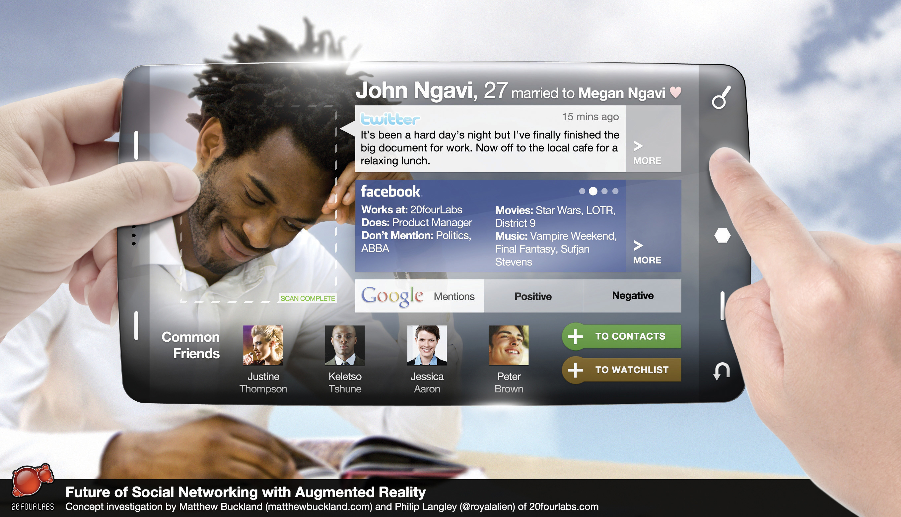

As much as Web sites need to cater to a number of browsers, they now need to cater to a number of devices, as more and more people are using their mobile phones, PDAs (personal digital assistants), and other mobile devices to connect to the Internet. However, visits from mobile devices are likely to be quite different from the visits from PCs. Visits from mobile phone users are likely to be more purpose driven or task specific, as opposed to leisurely browsing from PCs.
Just as with PCs, mobile phones can have different operating systems and different browsers, both affecting the way that Web sites and Web pages are viewed and used. In addition to this, Web pages are viewed on far smaller (and nonstandard) screens, and navigation is controlled through a keyboard or limited scrolling device. There are also a number of different ways that mobile phones and devices connect to the Internet. In particular, mobile phones can use the GSM (Global System for Mobile Communications) network—where access is via GPRS (General Packet Radio Service)Delivers wireless packet data services to GSM customers., EDGE (Enhanced Data Rates of GSM Evolution)A faster version of GSM (Global System for Mobile Communications) wireless service. It enables data to be delivered at rates up to 384 kilobytes per second (kbps) on a broadband connection., or 3G (third generation), depending on availability—or Wi-Fi-enabled devices can connect to wireless networks.
WAP stands for wireless application protocol and is a technology platform aimed at making Web sites accessible to mobile phones, despite the small screens and keypad limitations. WAP is essentially a wireless data connection and browser that can read a pared-down version of HTML (hypertext markup language). If a phone has only WAP access, it can only access Web sites that have been developed for this type of access.
More sophisticated phones and devices, and increasingly almost all phones sold are falling into this category, can use HTML browsers that have been specifically designed for mobile phones. These are pared-down versions of browsers that run on PCs or notebooks and have been specifically designed to take into account the limitations of mobile devices. In particular, browsers need to accommodate both the low bandwidth and the low memory capacity of mobile devices. Mobile browsers also need to cater to the navigation limitations of mobile devices as well as the fact that navigation is not standard across the various models of phones.
Chapter 13 "Web Site Development and Design" has more information on using a CSS (cascading style sheet) and W3C (World Wide Web Consortium) standards when building Web sites. If you are commissioning an agency to build a Web site for you, and mobile technology is important, ask to see what the Web site will look like without presentation markup or on a mobile phone.
When it comes to Web sites and mobile phones, there are three options for Webmasters:
For certain kinds of Web sites, there are “quick fixes” that allow a mobile version of the Web site to be created fairly easily. For example, http://mobilepress.co.za from Younique allows for Web sites and blogs based on the WordPress platform to be made mobile browser friendly. A quick search on Google will also give instructions on how to make small changes to your code in order to create a mobile friendly version of a Web site.
Some Web sites are more likely to be accessed from mobile phones than others, and savvy Webmasters can make sure that visitors have an excellent experience by building mobile versions.
As with all good Web design, the first step is in understanding users’ needs. When accessing a Web site from a mobile phone, a user is generally very task driven, time sensitive, and also likely to be location aware.
Task driven means that the user has a very specific purpose for visiting a Web site, and the Web site needs to help the user to achieve his objective with minimum fuss. For example, a user might want go to a Web site to check the score of a football game.
Time sensitive means that the user is even less likely to be able to spend time hunting for a solution to her problem; instead, the user expects to achieve tasks quickly. For example, a user en route to the airport may want to check to see if her flight is on time.
Location aware means that the location of the user often plays a large role in determining her objectives. For example, a user might be looking for restaurant suggestions in a town she is vacationing in.
These need to be factored in when creating Web sites for mobile users. Mobile Web sites need to be easy to navigate, should not contain more information than they need to, and should have services tailored to a user’s location.
Here are some tips when it comes to designing or optimizing Web sites for mobile users:
“One Web” refers to ensuring, as far as possible, that the same information and content is available to Web users, regardless of the device they are using to access the Web. So while Web sites should be optimized for presentation on various devices, proponents of “one Web” would argue that the actual content should not be different.
The W3C (World Wide Web Consortium) publishes guidelines for mobile Web standards as well as for regular Web standards. These can be accessed at http://www.w3.org/TR/mobile-bp.
Creating content and Web sites is one thing, but how do you actually get users to access them via their mobile phone?
WAP push messages are messages sent to a mobile phone that direct the user toward WAP content. While they may appear similar to SMS messages, these are a different type of message. The WAP push message contains a link that a user can follow to access WAP content.
Sending rich messages to mobile phone users can be tricky. Until there is increased general awareness of the types of messages that can be sent to and from mobile phones, MMS (multimedia message service) messages can represent a problematic push-marketing medium. However, a WAP push message can direct users to rich content, enabling a sense of user control over content viewed.
Semacode is the name of the company that developed software for reading two-dimensional (2D) bar codes. It has an application that integrates Semacode tags with Facebook. Check it out at http:// www.semacode.com.
Two-dimensional (2D) bar codes are similar to one-dimensional bar codes in that they can be scanned to access the information encoded, but 2D codes can contain a lot more information. In addition to this, with appropriate software, these codes can be photographed with a mobile phone, which then unpacks the information contained within the bar code.
Figure 16.2 The Two-Dimensional (2D) Bar Code for http://www.quirk.biz
Does that sound a little complicated? Essentially, the software that can be installed on the mobile phone turns the phone into a scanner. Information such as URLs (uniform resource locators), telephone numbers, or business names can be encoded in the bar code. When the code is scanned, the information is displayed on the phone. If this is a URL, for instance, the user can then visit that Web site without having to enter any additional information into the phone.
There are two encoding types in use: Datamatix (DM) bar codes or Quick Response (QR) bar codes. These can be open source or proprietary. The type of bar code affects the amount of information that may be stored in the bar code, while the standards used can affect the number of bar code readers that can successfully read the bar code.
2D bar codes are often also referred to as tags. These tags can be used in offline advertising and marketing campaigns to push consumers toward specific Web sites. Instead of having to remember and type in a URL, a user simply has to photograph the tag in order to visit the Web site.
Tags can be printed on billboards, on magazine pages, on t-shirts—in fact, on just about anything. The image here is the tag for http://www.quirk.biz. Download the software to your mobile phone, photograph it, and visit the Quirk Web site on your mobile!
Most companies now think nothing of including their Web site address on marketing collateral. However, in many cases, when this collateral is being viewed by potential customers, it is the mobile phone that is closer to hand than the PC. Remember, the phone is always carried and always on. Some organizations are cognizant of this and are now printing their mobile Web site URLs instead of or as well as their standard Web site address.
Internet search has become an integral part of our lives and is an important part of the mobile marketing mix. However, as with users’ intentions when accessing the mobile Internet, the needs of the user are different when compared to search on a PC.
The limitations of the device, the mobile phone, and the needs of the user are what drive the differences for mobile search.
First, with smaller keypads, whether QWERTY, touch screen, or numeric, users are likely to enter shorter queries into search engines on mobile phones. Search engine results need to be displayed on a smaller screen and need to be easy to navigate.
Users are more task driven when using mobile phones to search, seeking concise information that answers their queries as opposed to using search as part of a discovery process. Just as with search on a PC, there are two types of search listings for mobile phones: natural or organic results and paid-for results.
Optimizing Web content for mobile search involves optimizing content for mobile use in general. Navigation needs to be simple to use without a mouse, and Web site owners should consider ensuring that content most relevant to the mobile user is readily available.
Mobile search engines are seeking to create revenue from their services by offering paid listings in a similar fashion to traditional search. As technology develops, search providers are able to offer more sophisticated targeting options to advertisers. Geotargeting can be incredibly specific, allowing businesses to offer targeted advertising when a customer is located nearby.
It’s not only Web sites that can be designed specifically for mobile devices. Applications and widgets can be created that are specifically for the mobile phone. For example, Google’s popular e-mail service Gmail can be accessed via the mobile Web, or Gmail users can download a Java application to their phone that gives them access to their Gmail account. The application presents a user experience that has been tailored to the mobile phone and can even be tailored to a particular handsetA portable or mobile phone..
Similarly, Apple’s popular iPhone uses apps, allowing iPhone users to access all manner of Web applications.
As of 2008, apps represent a marketing opportunity for products and companies reaching out to a tech-savvy, affluent community. Widgets can be products on their own, such as the Baby Monitor for the iPhone, or they can be used to market other products, such as a widget that provides easy access to the blog BoingBoing.net.
MXit (http://www.mxit.com), which is pronounced “mix it,” is a free instant-messaging software application that was developed in South Africa for use on mobile phones and PCs. It runs on GPRS and 3G mobile phones that have Java support, as well on PCs using the Adobe Flash player. It allows users to send and receive text and multimedia messages to and from other users who are connected to the Internet, whether it be between mobile phones, PCs, or between the two. The messages are sent and received via the Internet instead of using SMS technology and also allow users to exchange messages with other IM programs such as MSN Messenger. Although the networks do charge for data costs, this is usually far cheaper than SMS costs, which has driven the large adoption of this service, fourteen million registered users, particularly in the youth market.
As well as being a chat platform, MXit allows its users to customize their profiles by downloading “skinz” (customized profiles, with specific fonts, images, colors, etc.), wallpapers, and emoticards and has its own e-commerce platform (supported by its own currency, Moola) and a music platform.
There are many similarities between Web-based social networks and MXit when it comes to opportunities for marketers. MXit provides social profiling, so that advertising can be served to particular demographics. MXit also allows organizations to set up profiles that users can connect with and chat with. These can be celebrities who want to keep in touch with brands, or cinema chains such as South Africa’s Ster Kinekor, which distribute movie information via the MXit channel.
Augmented reality (AR)When computer graphics are projected into the “real world” through the use of mobile technology; when reality is augmented through the use of computer graphics. is a variation of virtual reality. Rather than immersing the user in a virtual world, however, AR takes computer graphics and superimposes them into “reality”—the physical space around the person operating an AR device. These graphics can be 3D images or simply information tags about a location.
While AR devices are relatively new, they do have a history outside their use in mobile phones. They can and have been used in medicine (superimposing surgical information onto a patient’s body), in architecture (superimposing virtual buildings into a space where they are yet to be built), or for cross-continental collaboration where participants can’t be in the same room.
Ronald Azuma defines AR as involving three characteristics:
Technical components generally necessary for AR include a CPU (central processing unit), a camera, and accelerometer and GPS (global positioning system)—all things that are present in the conveniently sized mobile phone (especially smartphones). It’s no wonder that AR through mobile phones presents such exciting possibilities for communicating with people.
The first use of AR in advertising was by HIT Lab NZ and Saatchi & Saatchi in 2007 for an application for the Wellington Zoo, which allowed users to view virtual animals by pointing their phone cameras at printed bar codes.“History of Mobile Augmented Reality,” Institute for Computer Graphics and Vision, https://www.icg.tugraz.at/~daniel/HistoryOfMobileAR (accessed June 20, 2010).
At present, applications have been interesting but often more gimmicky than useful. Some of the examples include an Ikea campaign that allowed people to view virtual versions of their furniture in their homes through their phone cameras.
Various applications suggest other uses, though. Tweetmondo is an application that lets you see what Twitter “tweets” have been sent from the area you are in at any given time. In Japan, users of the Sekai mobile application can leave messages about particular locations for other users to view when they arrive in the same location.“Mobile Augmented Reality Builds Deep Consumer Engagement,” MobiAD News, November 12, 2009, http://www.mobiadnews.com/?p=4204 (accessed June 20, 2010).
AR is quite new and still has a long way to go. Barriers like costs in development have held it back, but with smartphones becoming more common, potential for AR applications is increasing as well. There has been discussion, for example, of the possibility that AR applications could not only superimpose graphics but also perhaps remove real objects from view through mobile cameras (by recreating a background out of the colors surrounding a desk lamp, for example, and then covering the lamp).
Going forward, there are a number of challenges AR faces, investment in development and the potential for serous privacy concerns being the most notable. The images below illustrate what is possible when the realms of social media, identity recognition, and geographical location are combined—both exciting and scary stuff.
Figure 16.3 Future of Social Networking with Augmented Reality
Source: http://www.matthewbuckland.com.
As a mobile marketing channel, the possibilities of AR are so significant that they should really be explored by any marketer hoping to make an impression, provided that their target market can afford smartphones, that is.
There is no doubt that the mobile phone presents an enticing marketing opportunity and market space. Early movers in the mobile space have seen remarkable success, and some have made remarkable amounts of money. How do you prepare to go mobile?
First, as with any marketing activity, planning and setting goals are key. What do you want your campaign to achieve? How can mobile be used to help you achieve those goals?
Second, you need to consider your audience. Who do you need to reach? What sort of phones and features of their phones do they have and, importantly, use? iPhone applications may be more fun to develop than a campaign based on SMS, but iPhone applications can only reach iPhone users, while SMS can reach almost everyone who has a mobile phone. (Many developers of iPhone apps do, however, make similar or identical apps for other smartphones.)
Third, how will users actually access your campaign? Do you need permission first to send them messages, or will you be advertising or marketing the campaign to get them to access it?
You also need to choose partners for your campaign for their technology and distribution networks and, of course, for their expertise. Ensure that the partners you choose adhere to your country’s mobile ethics and standards code, as well as those of your brand.
Lastly, you need to determine how mobile marketing fits into your overall marketing strategy. Will mobile marketing be complementing existing services and campaigns, or will you be developing campaigns, goods, and services specifically for the mobile environment?
The mobile phone has many benefits (there are those seven unique features after all) but comes with its own challenges. The reach of the mobile phone alone makes it a very attractive marketing channel.
Many mobile marketing mediums need little audience education, but marketers need to be aware of creating more complicated campaigns and applications. If there is an extensive education process required in order for a campaign to succeed, it probably needs to be rethought.
Because the mobile phone is so personal, permission and privacy need to be at the foundation of any mobile campaign. Unlike an e-mail or Web pages where there is space available on screen to explain privacy and permission, there is very little real estate on the mobile phone to do so. Ensure that you have very clear permission to market to the phone numbers on your database and that it is easy for users to opt out of receiving your messages.